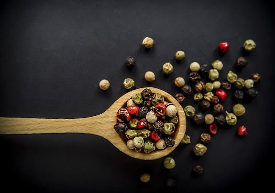
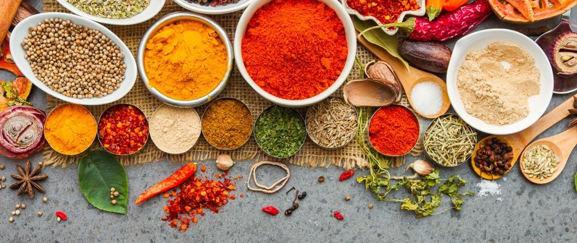

產品介紹

胡椒是目前世上最重要的天然食品香料，也是香料中消耗最多、最為人喜愛的一種。其原產地在印度南方之馬拉巴海岸一帶，胡椒生長區域在海平面到海拔1500英呎之熱帶地區，印尼、印度、巴西、馬來西亞、錫蘭、泰國、新加坡等都有生產。人類使用胡椒的歷史很久，自三千年前印度人即開始用胡椒，不但將它做為食品調味用，同時也是東西方最早貿易物品之一，由於胡椒經濟價值很高，中世紀甚至把胡椒當作錢幣使用。
More
九層塔，是很大眾化的料理用香草。原生於非洲和亞洲熱帶地區，現於東歐、南斯拉夫、賽普勒斯、法國、義大利、美國、馬達加斯加都有栽植。 九層塔味道溫和略甜，有點薄荷香，也有新鮮葉片和丁香的清香，氣味隨品種不同而異。新鮮的九層塔不但好吃，還能幫助消化道機能。除了烹調的香料之外，九層塔也被當作防蟲的植物，同時也會運用在芳香療法中。
More

所有產品
>